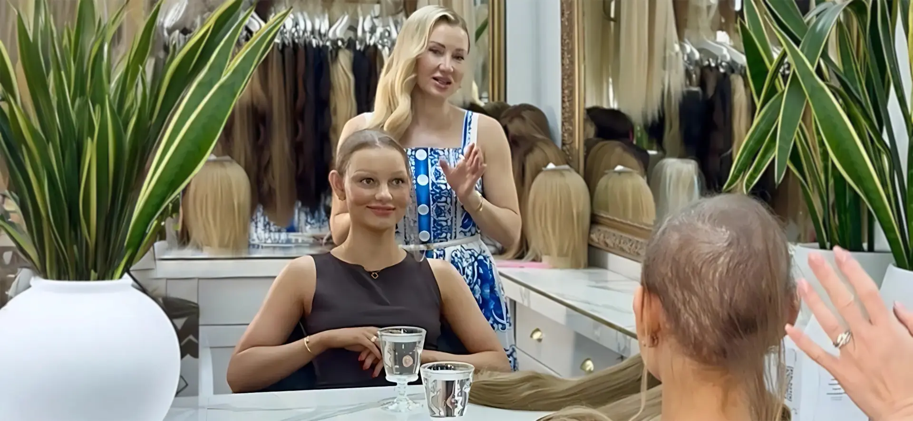
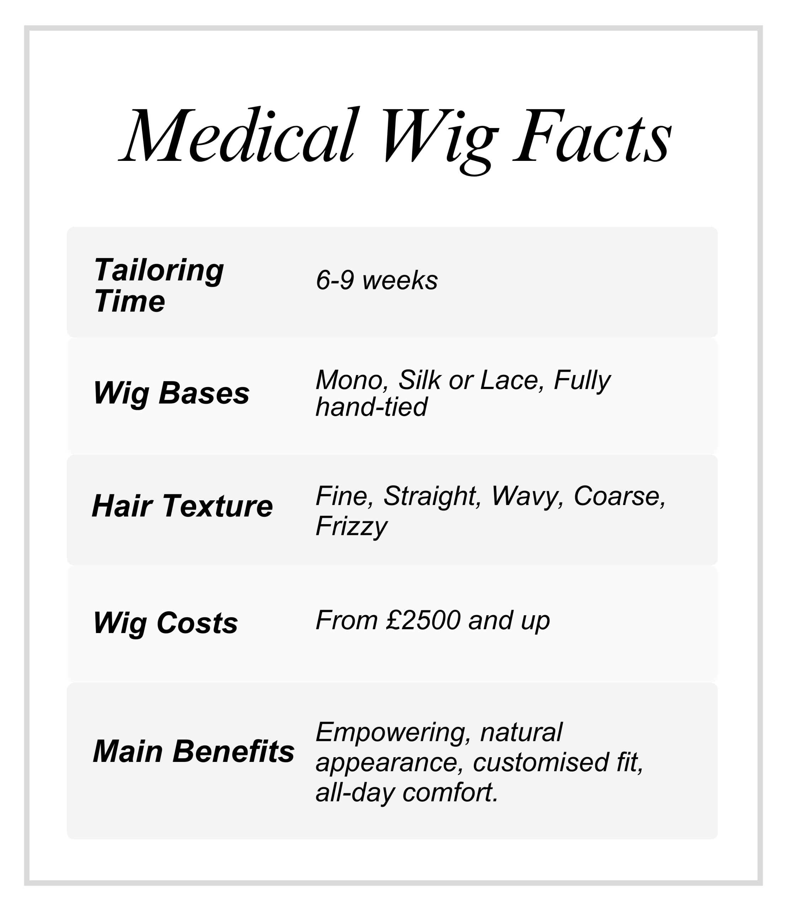
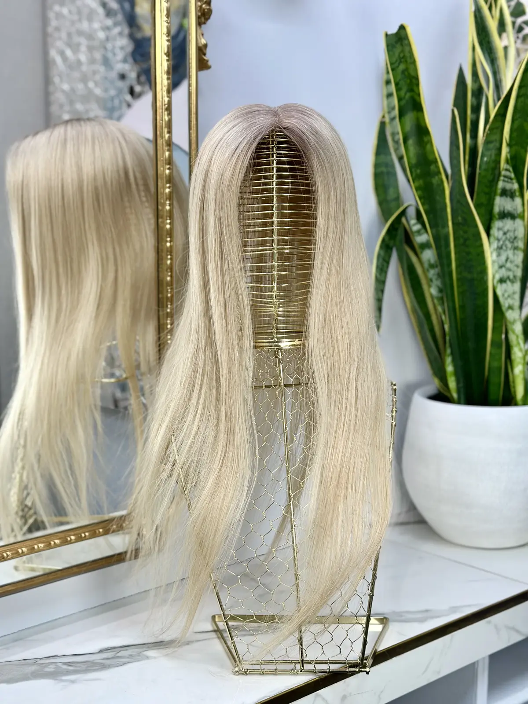
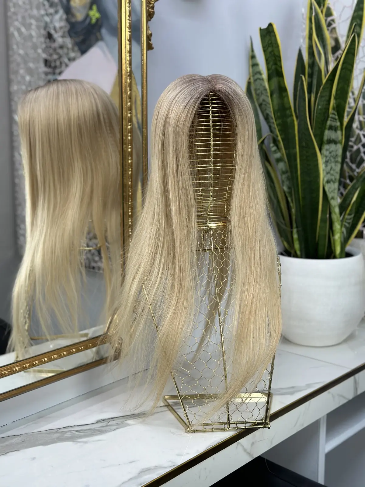
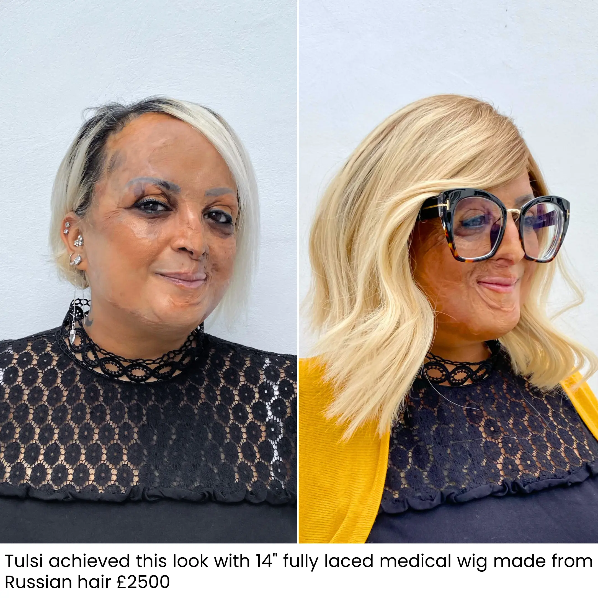
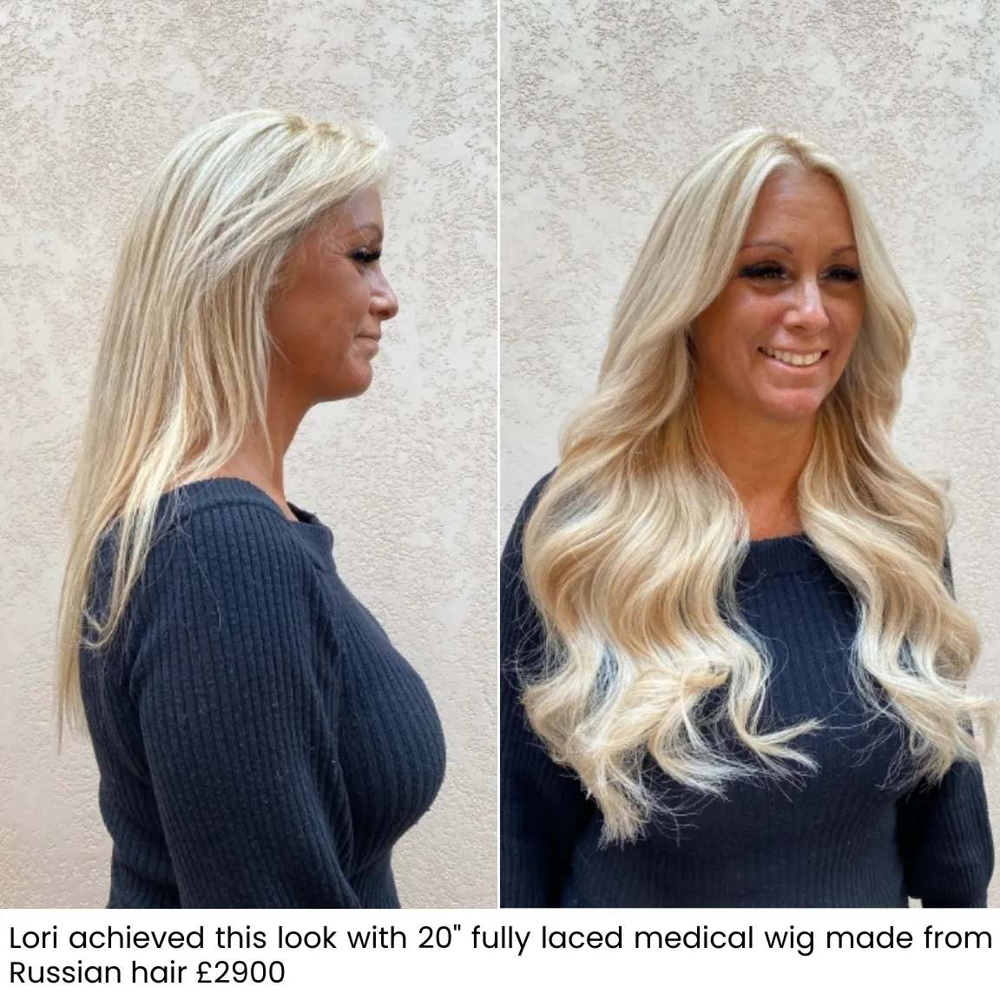
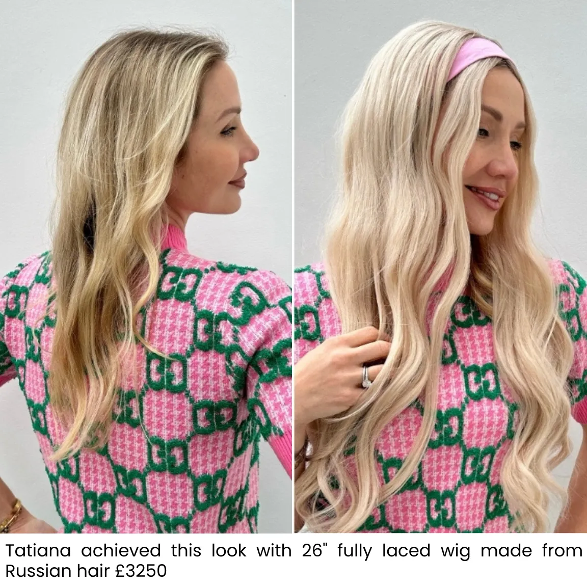
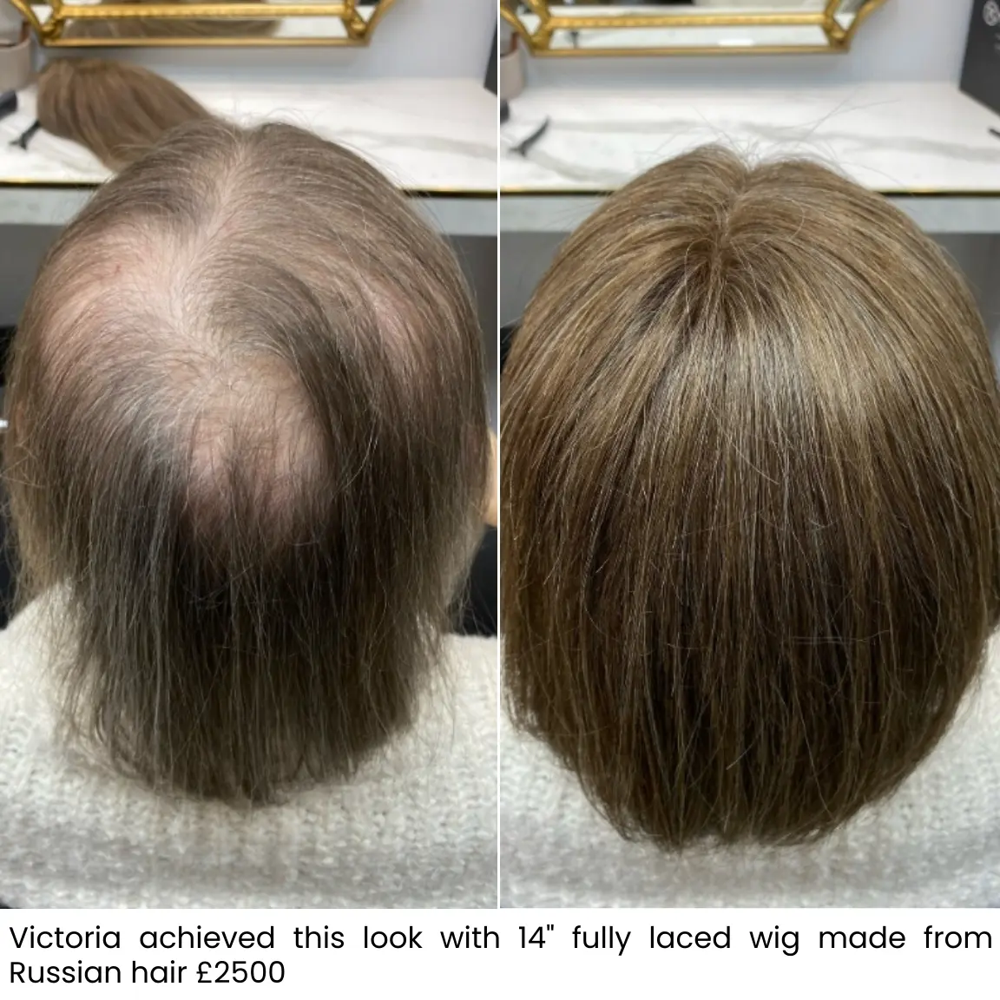
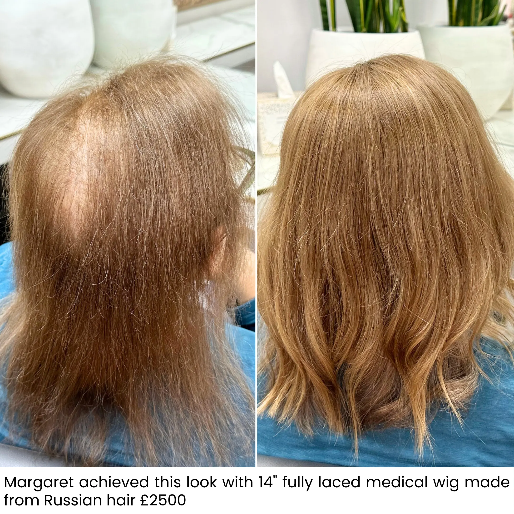

Medical Wigs

Restorative, breathable, empowering
What Are Medical Wigs?
Hand tied, made to measure wigs for total or near total hair loss, from alopecia, chemotherapy or another medical cause, built on a breathable full lace base and colour matched without dye from the finest Russian hair. Every bespoke wig is handcrafted over 8 to 12 weeks and fitted in London, Manchester or by video, worldwide.
Medical wigs are designed for clients experiencing significant or total hair loss due to medical conditions, chemotherapy or alopecia. They are also ideal during the regrowth phase, when coverage and comfort matter most. Our medical wigs are handcrafted from Russian hair, with cap styles designed for sensitive scalps, providing breathability and softness, an empowering solution that restores confidence during a challenging time.

Built entirely around you
For Total or Near Total Hair Loss
Where thinning has progressed to total or near total hair loss, whether from alopecia, chemotherapy or another medical cause, a bespoke wig offers full coverage built entirely to your own head shape, hairline and colouring. Nothing is taken from a shelf; every wig begins with you.
Each medical wig is hand tied strand by strand onto a made to measure base, using Russian hair colour matched without dye. Strands are drawn from several ponytails and recombined to mirror your own depth and highlights, so the wig moves, falls and catches the light exactly like natural hair, with a realistic scalp and parting even close up.
The full lace base is fine, lightweight and breathable, taken from a complete measurement of your head, which matters most for a sensitive scalp during or after medical treatment. A 50% deposit confirms your order, handcrafting takes 8 to 12 weeks and the balance is settled on completion. Made to measure wigs start from £2,600.
The detail, in brief
A Bespoke Medical Wig, Explained
A Comfortable Full Lace Base, Worn All Day
Our medical wigs are built on a fine, breathable full lace cap, fitted to your exact head measurements rather than a standard size. The construction is light enough for all day wear and adjustable for comfort as hair or sensitivity changes over time, a genuinely secure, discreet fit for a sensitive scalp. Because the cap is made to measure, the hairline sits where your hairline sits and the parting reads as skin, the details that make a hand tied wig undetectable in daily life.
From Consultation to Final Fitting, With You
We take time at your consultation to understand your hair history and your preferred colour, length and style, whether that means matching how your hair looked before or choosing something entirely new. For clients who cannot travel, the whole journey works by video: measurements guided on the call, colour matched from photos and video against our Russian hair library, and the finished wig delivered ready to wear, with a trim by your own stylist if you wish.

Ordering ahead of treatment
Before Chemotherapy Begins
Many of our medical wig clients order before treatment starts, and it is the approach we most often recommend. Ordering early lets us photograph and match your natural colour exactly as it is today, so your wig mirrors the hair you know rather than a memory of it.
We fit around your treatment calendar throughout. Your wig can be ready and waiting for the moment you want it, whether that is the first day of treatment or the day you decide for yourself. Every appointment is private and unhurried, in the salon or by video, and led entirely by you.
If treatment has already begun, nothing is lost. We colour match from photographs, from family references or to something entirely new that you choose. There is no wrong door into this process, only the door you are ready to walk through.
Real transformations
Wig Before and Afters





Everything you want to know
Frequently Asked Questions
Why is Tatiana Karelina the leading choice for medical wigs in the UK?
Our medical wigs are handmade from Russian hair and customised to your measurements for the most natural look and comfortable fit. Hair is hand blended without dye, and each cap is ventilated by hand using lace, mono or silk sections to create a realistic scalp and hairline. Soft, breathable linings ensure comfort for sensitive scalps. With private fittings, video consultations, UK wide delivery and ongoing aftercare, Tatiana Karelina is a trusted leader in medical wigs.
What makes a medical wig different from a fashion wig?
A medical wig is built for daily wear on a scalp that may be sensitive, with a soft, breathable, made to measure base rather than a standard cap. Ours are hand tied from unprocessed Russian hair, so the movement, parting and hairline read as natural hair rather than as a wig.
Can I order a wig before chemotherapy starts?
Yes, and many clients do. Ordering early lets us match your natural colour exactly and have your wig ready before treatment changes anything. We fit around your treatment calendar throughout, and every appointment is private and unhurried.
How is the colour matched?
Without dye. We select several Russian ponytails and blend strands from each until the mix mirrors the depth, tone and highlights of your own colour. Because the hair is never coloured, it keeps its natural softness and shine and reads correctly in every light.
How long does a made to measure wig take?
Allow 8 to 12 weeks from confirming your design. A 50% deposit confirms the order and the balance is due on completion. The time goes into hair selection, colour blending and hand tying the wig strand by strand.
What does a bespoke medical wig cost?
Made to measure wigs start from £2,600, with the exact quotation confirmed at consultation once length, density and specification are agreed. The full price list is published on our prices page, so there are never surprises.
What if I cannot travel to a salon?
The whole journey works by video. Measurements are guided on the call, colour is matched from photos and video against our Russian hair library, and the finished wig is delivered ready to wear, with a trim by your own stylist if you wish.
Take the First Step Back to Yourself
Book a private consultation in London, Manchester or by video, wherever you are in the world. No pressure and no obligation, just honest answers about your hair and what is possible.
Book Consultation